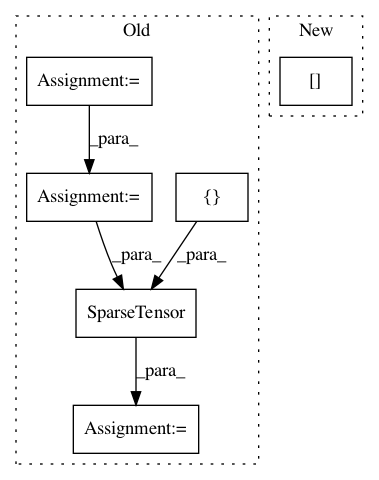

09e572cef1dc655bfc5255ecd0b3787512609e3d,torch_geometric/nn/functional/graph_conv.py,,graph_conv,#Any#Any#Any#Any#Any#,27
Before Change
n, e = x.size(0), row.size(0)
if edge_attr is None:
edge_attr = x.data.new(e).fill_(1)
// Compute degree.
degree = x.data.new(n).fill_(0).scatter_add_(0, row, edge_attr) + 1
degree = degree.pow_(-0.5)
// Normalize and append adjacency matrix by self loops.
edge_attr = edge_attr * degree[row]
edge_attr *= degree[col]
edge_attr = torch.cat([edge_attr, degree * degree], dim=0)
edge_index = add_self_loops(edge_index, n)
adj = SparseTensor(edge_index, edge_attr, torch.Size([n, n]))
// Convolution.
output = SparseMM(adj)(torch.mm(x, weight))
After Change
deg = degree(row, num_nodes, dtype=x.dtype, device=x.device).pow_(-0.5)
// Normalize and append adjacency matrix by self loops.
edge_attr = deg[row] * edge_attr * deg[col]
// Append self-loops.
edge_attr = torch.cat([edge_attr, deg * deg], dim=0)
edge_index = add_self_loops(edge_index, num_nodes)
In pattern: SUPERPATTERN
Frequency: 3
Non-data size: 6
Instances
Project Name: rusty1s/pytorch_geometric
Commit Name: 09e572cef1dc655bfc5255ecd0b3787512609e3d
Time: 2018-04-30
Author: matthias.fey@tu-dortmund.de
File Name: torch_geometric/nn/functional/graph_conv.py
Class Name:
Method Name: graph_conv
Project Name: rusty1s/pytorch_geometric
Commit Name: 7b8716403efd3cee3fd62f50d2e2e4b2183a90b6
Time: 2018-04-30
Author: matthias.fey@tu-dortmund.de
File Name: torch_geometric/nn/functional/cheb_conv.py
Class Name:
Method Name: cheb_conv
Project Name: jfkirk/tensorrec
Commit Name: 55ebce5ab37ec6b17edc4953fe35a4a2ba2a47de
Time: 2018-03-09
Author: james.f.kirk@gmail.com
File Name: tensorrec/tensorrec.py
Class Name: TensorRec
Method Name: _build_tf_graph